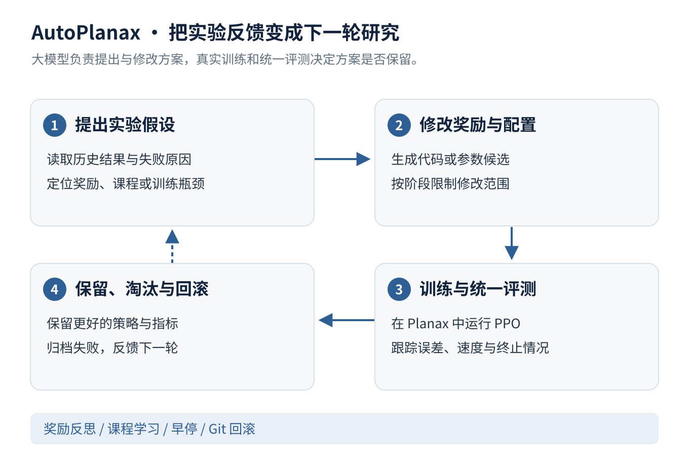
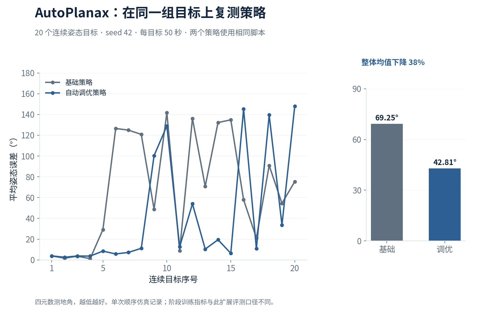

AutoPlanax：面向自动化强化学习研究的智能体框架
让大模型成为能提出假设、修改代码并从实验中学习的研究助手。我基于 Planax 搭建自动化强化学习研究闭环，把奖励设计、训练调度、策略评测和历史反馈连接起来。
- 集成奖励反思、上下文进化搜索、分阶段修改权限、早停与 Git 回滚；保留更好的策略，同时归档淘汰与失败记录。
- 在相同的 20 个连续姿态目标上复测，自动调优策略的平均四元数测地角误差由基础策略的 69.25° 降至 42.81°，约下降 38%（seed 42，单次顺序仿真）。
- 评估同时关注姿态误差、空速误差和终止情况，并关联实验假设、配置与 checkpoint，支持结果复查和下一轮迭代。

